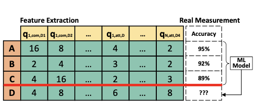

SGQuant
With the increasing popularity of graph-based learning, Graph Neural Networks (GNNs) win lots of attention from research and industry field because of their high accuracy. However, existing GNNs suffer from high memory footprints (e.g., node embedding features). This high memory footprint hurdles the potential applications towards memory-constrained devices, such as the widely-deployed IoT devices. To this end, we propose a specialized GNN quantization scheme, SGQuant, to systematically reduce the GNN memory consumption. Specifically, we first propose a GNN-tailored quantization algorithm design and a GNN quantization fine-tuning scheme to reduce memory consumption while maintaining accuracy. Then, we investigate the multi-granularity quantization strategy that operates at different levels (components, graph topology, and layers) of GNN computation. Moreover, we offer an automatic bit-selecting (ABS) to pinpoint the most appropriate quantization bits for the above multi-granularity quantizations.
Multi-granularity Quantization
We propose four different types of granularity: (a)component-wise, (b)topology-aware, (c)layer-wise, and (d)uniform, as illustrated in the figure. The simplest granularity is the uniform quantization, which applies the same quantization bits to all layers and components in the GNN. It helps reduce the memory consumption by replacing the 32-bit values with the corresponding q-bit quantized data representation. However, when applying the same quantization bit to all layers, nodes, and components, we ignore their different sensitivity to quantization bits and the introduced numerical error, leading to degraded accuracy. To this end, we need the quantization at finer granularity to cater the different sensitivity.
Component-wise Quantization (CWQ) considers the quantization sensitivity at each GNN component and applies different quantization bit to different components.In each layer, modern GNNs usually contain the attention component for measuring the relationship for each pair of nodes, and the combination component for computing the embedding for the next layer.Our key insight is that the attention component is more robust to the numerical error in the GNN quantization compared to the combination component. Thus,we can usually apply a lower quantization bit on the attention component than the combination component.
Topology-aware Quantization (TAQ) exploits the graph topology information and applies different quantization bits for different nodes based on their most essential topology property – degree. Nodes with a large degree are more robust to the quantization error and we can use smaller quantization bits to these high-degree nodes
Layer-wise Quantization (LWQ) exploits the diverse quantization sensitivity in individual GNN layers and provides different quantization bits to each layer.Under the same memory consumption, assigning higher bits to the leading layers generally leads to higher accuracy, compared to assigning higher bits to the succeeding layers.
Auto-bit Selection
There are three challenges in solving this combinatorial optimization problem. First, there is a large design space due to the abundant quantization granularity.Second, large diversity exists in the GNN model design in terms of the attention generation in the aggregation components and the neural network design in the combination components. Third, graph topology usually varies in terms of the number of nodes and the degree distribution, making the measurement of quantization intractable.To address these challenges, we build an auto-bit selection (ABS) with two main components: a machine learning cost model that predicts the accuracy of the quantized GNN under a given quantization configuration, and an exploration scheme to select the promising configurations.
Machine Learning Cost Model

We build a ML cost model that learns on the fly the interaction among quantization bits, GNN models, and the graph topology. We treat this task as a regression problem and use a traditional ML model — regression tree, as our ML cost model. We prefer the regression tree over neural networks since the former one has faster inference speed and does not require a large amount of training data.
Exploration Scheme
We propose an exploration scheme that iteratively trains the ML cost model and selects promising configurations. In this way, we can balance the low overhead in training the ML cost model and the precise prediction of configuration accuracies. In particular, there are five steps in our exploration scheme.
• Step2: Train the ML cost model based on the collected features and labels.
• Step3: Sample a large number Nsample of configurations, use the ML cost model to predict their accuracy,
and find the ones with the top-Nmea accuracy.
• Step4: Extract features of the selected configurations and measure their accuracies.
• Step5: Repeat Step2 - Step4 until reaching Niter iterations.